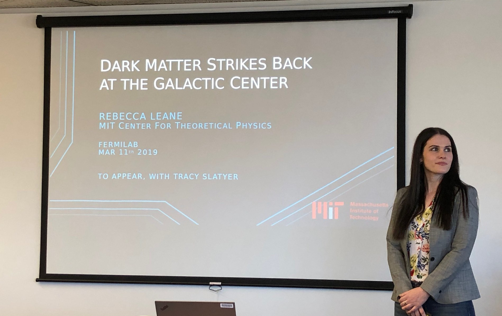

Rebecca K. Leane

| 
Photo by Dan Hooper | |
| Lectures | |
2. |
Dark Matter Theory Invited Lecturer, SLAC Summer Institute (SSI). August 2022 Upcoming |
1. |
Dark Matter Model Building Guest Lecture, MIT graduate course "8.811: Particle Physics II". December 2017 Blackboard notes, 120 mins |
Invited Plenary/Overview Talks and Colloquia | |
| 96. |
Upcoming Invited Plenary Talk, TeVPA 2022, Kingston ON, Canada. August 2022 |
| 95. |
Upcoming Invited Plenary Talk, Identification of Dark Matter (IDM) 2022, Vienna, Austria. July 2022 |
| 94. |
Overview of Indirect Detection Searches for Dark Matter (Upcoming) Invited Overview Talk, HEP/Astro Results Forum, Online. May 2022 |
| 93. |
Upcoming Invited Colloquium, SLAC, Menlo Park CA, USA. February 2022 |
| 92. |
Detecting Dark Matter in Celestial Bodies Invited Colloquium, Carleton University, Ottawa, Canada. December 2021 |
| 91. |
Detecting Dark Matter in Celestial Bodies Invited Colloquium, CERN, Geneva, Switzerland. October 2021 |
| 90. |
Overview of Indirect Searches for Dark Matter Invited Plenary Talk, Dark Matter 2021, Santander, Spain. September 2021 |
| 89. |
Detecting Dark Matter in Stars and Planets Invited Colloquium, North Carolina State University, Rayleigh NC, USA, September 2021 |
| 88. |
Detecting Dark Matter in Celestial Bodies Invited Plenary Talk, EXPLORE workshop, Germany. August 2021 |
| 87. |
Detecting Dark Matter in Celestial Bodies Invited Plenary Talk, Planck 2021, Durham, UK. June 2021 |
| 86. |
Detecting Dark Matter in Planets Invited Colloquium, Stockholm University, Stockholm, Sweden. May 2021 |
| 85. |
Dark Matter in Stars and Planets Invited Colloquium, University of Chicago KICP, Chicago IL, USA. May 2021 |
| 84. |
Exoplanets as Dark Matter Detectors Invited Colloquium, SUNY Albany, Albany NY, USA. March 2021 |
| 83. |
A Puzzle at the Galactic Center Invited Colloquium, Northeastern University, Boston MA, USA. February 2021 |
| 82. |
Exoplanets as Sub-GeV Dark Matter Detectors Invited Plenary Talk, Light Dark World 2020, Sydney, Australia (remote). December 2020 |
| 81. |
Status of the Galactic Center Gamma-Ray Excess Invited Plenary Talk, Identification of Dark Matter (IDM) 2020, Vienna, Austria (remote). July 2020 |
| 80. |
Indirect Detection of Dark Matter in the Galaxy Invited Plenary Talk, 3rd World Summit on Exploring the Dark Side of the Universe, Guadeloupe (remote). March 2020 |
| 79. |
A Story of the Galactic Center Excess Invited Colloquium, MIT, LNS, Cambridge MA, USA. February 2020 |
| 78. |
Interplay of Collider and Indirect Searches for Dark Matter Invited Plenary Talk, DM@LHC 2019, Seattle WA, USA. August 2019 |
| 77. |
A Tour of the Universe: The Hunt for Dark Matter Invited Colloquium, University of Melbourne, Melbourne VIC, Australia. December 2018 |
| 76. |
Dark Matter Theory and New Searches Invited Overview Talk, CAASTRO-CoEPP Joint Workshop, Melbourne VIC, Australia. January 2017 |
Seminars and Other Conference Talks: | |
| 75. |
Upcoming Invited Seminar, Stanford University, Stanford CA, USA. April 2022 |
| 74. |
Upcoming Invited Seminar, University of Hawaii, Manoa HI, USA. April 2022 |
| 73. |
Upcoming Invited Seminar, University of Kentucky, Lexington KY, USA. March 2022 |
| 72. |
Upcoming Invited Seminar, Kings College London, London UK. March 2022 |
| 71. |
Upcoming Invited Talk, Bay Area Theoretical Physics Meeting, San Francisco CA, USA. March 2022 |
| 70. |
Upcoming Invited Talk, FISICA 2022, Mainz, Germany. March 2022 |
| 69. |
Detecting Dark Matter in Celestial Bodies
Invited Seminar, Rutgers University, Piscataway NJ, USA. December 2021 |
| 68. |
Detecting Dark Matter in Celestial Bodies
Invited Seminar, UC Berkeley/LBNL, Berkeley CA, USA. November 2021 |
| 67. |
Detecting Dark Matter in Celestial Bodies
Invited Seminar, Colgate U., Hamilton NY, USA. November 2021 |
| 66. |
Gamma-Ray Searches for Dark Matter in Celestial Bodies Invited Parallel Talk, PANIC 2021, Lisbon, Portugal (remote). September 2021 |
| 65. |
Detecting Dark Matter in Planets Invited Seminar, Max-Planck Institute, Heidelberg, Germany (remote). July 2021 |
| 64. |
Detecting Dark Matter in Planets Invited Seminar, UCLA, Los Angeles, CA (remote). June 2021 |
| 63. |
Dark Matter in Stars and Planets Invited Seminar, Imperial College London, London UK (remote). April 2021 |
| 62. |
Latest Developments for the Galactic Center Excess Invited Seminar, University of Torino, Torino, Italy (remote). April 2021 |
| 61. |
Exoplanets as Sub-GeV Dark Matter Detectors Invited Talk, Aspen Center for Physics Winter Conf., Aspen CO, USA (remote). March 2021 |
| 60. |
Dark Matter in Stars and Planets Invited Seminar, University of Notre Dame, Notre Dame IN, USA (remote). March 2021 |
| 59. |
Dark Matter in Stars and Planets Invited Seminar, Brookhaven National Laboratory, Brookhaven NY, USA (remote). February 2021 |
| 58. |
Dark Matter in Stars and Planets Invited Seminar, Queen's University, Kingston ON, Canada (remote). February 2021 |
| 57. |
A Story of the Galactic Center Excess Invited Seminar, SITP, Stanford University, Stanford CA, USA (remote). December 2020 |
| 56. |
Exoplanets as Sub-GeV Dark Matter Detectors Invited Seminar, Caltech, Pasadena CA, USA (remote). December 2020 |
| 55. |
Exoplanets as New Sub-GeV Dark Matter Detectors Invited Talk, 3rd South American DM Workshop, Brazil (remote). December 2020 |
| 54. |
Exoplanets as New Sub-GeV Dark Matter Detectors Invited Seminar, UC Santa Cruz, Santa Cruz CA, USA (remote). November 2020 |
| 53. |
Detecting Dark Matter in Exoplanets Invited Seminar, SLAC National Accelerator Laboratory, Menlo Park CA, USA (remote). November 2020 |
| 52. |
Hidden Sectors Invited Talk, CF-01 Snowmass Meeting (remote). August 2020 |
| 51. |
A Story of the Galactic Center Excess Invited Seminar, University of Sydney, Sydney Australia (remote). August 2020 |
| 50. |
A Story of the Galactic Center Excess Invited Seminar, Kavli IPMU, Tokyo, Japan (remote). May 2020 |
| 49. |
Cooking Pasta with Dark Matter Parallel Talk, Pheno 2020, Pittsburgh PA, USA (remote). May 2020 |
| 48. |
(Talk postponed due to COVID-19) Invited Talk, LCTP Symposium: Astrophysical Signatures of DM, Ann Arbor MI, USA. May 2020 |
| 47. |
(Talk postponed due to COVID-19) Invited Talk, Aspen Winter Conference on Particle Physics, Aspen CO, USA. March 2020 |
| 46. |
A Story of the Galactic Center Excess Invited Seminar, U. Mass Amherst, Amherst MA, USA. February 2020 |
| 45. |
A Story of the Galactic Center Excess Invited Seminar, Tufts University, Medford MA, USA. February 2020 |
| 44. |
The Hunt for Dark Matter: Hints and New Searches Invited Seminar, Boston University, Boston MA, USA. November 2019 |
| 43. |
The Hunt for Dark Matter: Hints and New Searches Invited Seminar, SLAC National Accelerator Laboratory, Menlo Park CA, USA. October 2019 |
| 42. |
Dark Matter Strikes Back at the Galactic Center Invited Seminar, Texas A&M University, College Station TX, USA. October 2019 |
| 41. |
Dark Matter Strikes Back at the Galactic Center Invited Seminar, MIT Center for Theoretical Physics, Cambridge MA, USA. September 2019 |
| 40. |
Dark Matter Strikes Back at the Galactic Center Invited Seminar, Perimeter Institute, Waterloo ON, Canada. June 2019 |
| 39. |
Dark Matter Strikes Back at the Galactic Center Invited Talk, Aspen Center for Physics, Aspen CO, USA. June 2019 |
| 38. |
Dark Matter Strikes Back at the Galactic Center Invited Seminar, University of Chicago/KICP, Chicago IL, USA. April 2019 |
| 37. |
Dark Matter Strikes Back at the Galactic Center Invited Seminar, Brown University, Providence RI, USA. April 2019 |
| 36. |
Dark Matter Strikes Back at the Galactic Center Invited Seminar, Fermilab, Batavia IL, USA. March 2019 |
| 35. |
Dark Matter Strikes Back at the Galactic Center Invited Seminar, Brandeis University, Boston MA, USA. March 2019 |
| 34. |
Dark Matter Strikes Back at the Galactic Center Invited Seminar, Princeton University, Princeton NJ, USA. February 2019 |
| 33. |
Dark Matter Strikes Back at the Galactic Center Invited Talk, TRIUMF Dark Matter Workshop, Vancover BC, Canada. February 2019 |
| 32. |
Tricking Non-Poissonian Template Fitting: Dark Matter Hiding at the Galactic Center? Parallel Talk, DESY Theory Workshop, Hamburg, Germany. September 2018 |
| 31. |
Tricking Non-Poissonian Template Fitting: Dark Matter Hiding at the Galactic Center? Seminar, University of Melbourne, Melbourne VIC, Australia. September 2018 |
| 30. |
Point Sources at the Galactic Center Parallel Talk, IDM 2018, Providence RI, USA. July 2018 |
| 29. |
GeV-Scale Thermal WIMPs: Not Even Slightly Dead Parallel Talk, IDM 2018, Providence RI, USA. July 2018 |
| 28. |
GeV-Scale Thermal WIMPs: Not Even Slightly Dead Parallel (Invited) Talk, PASCOS 2018, Cleveland OH, USA. June 2018 |
| 27. |
GeV-Mass Thermal WIMPs: Not Even Slightly Dead Parallel Talk, Pheno 2018, Pittsburgh PA, USA. May 2018 |
| 26. |
GeV-Mass Thermal WIMPs: Not Even Slightly Dead Invited Seminar, California Institute of Technology, Pasadena CA, USA. April 2018 |
| 25. |
GeV-Mass Thermal WIMPs: Not Even Slightly Dead Invited Seminar, Lawrence Berkeley National Laboratory, Berkeley CA, USA. April 2018 |
| 24. |
GeV-Mass Thermal WIMPs: Not Even Slightly Dead Invited Seminar, Michigan Center for Theoretical Physics, Ann Arbor MI, USA. April 2018 |
| 23. |
GeV-Mass Thermal WIMPs: Not Even Slightly Dead Invited Seminar, Dartmouth University, Hanover NH, USA. April 2018 |
| 22. |
GeV-Mass Thermal WIMPs: Not Even Slightly Dead Invited Seminar, University of Melbourne, Melbourne VIC, Australia. January 2018 |
| 21. |
Novel Signatures of Dark Matter in the Sky Invited Seminar, MIT Center for Theoretical Physics, Cambridge MA, USA. September 2017 |
| 20. |
Phenomenology of Particle Dark Matter PhD Completion Seminar, University of Melbourne, Melbourne VIC, Australia. March 2017 |
| 19. |
Novel Signatures of Dark Matter in the Sky Invited Talk, TRIUMF, Vancouver BC, Canada (remote). December 2016 |
| 18. |
Impact of Mass Generation for Simplified Dark Matter Models Invited Talk, ATLAS Astroparticle Forum Plenary Meeting, CERN Geneva (remote). November 2016 |
| 17. |
Unitarity and Gauge Invariance in Dark Matter Models Invited Talk, CETUP Dark Matter Workshop, Deadwood SD, USA. July 2016 |
| 16. |
Dark Forces in the Sky: Signals from Z' and the Dark Higgs Invited Seminar, CCAPP, Ohio State University, Columbus OH, USA. June 2016 |
| 15. |
Unitarity and Gauge Invariance in Dark Matter Models Invited Seminar, University of Cincinnati, Cincinnati OH, USA. May 2016 |
| 14. |
Dark Forces in the Sky: Signals from Z' and the Dark Higgs Invited Seminar, UC Riverside, Riverside CA, USA. May 2016 |
| 13. |
Dark Forces in the Sky: Signals from Z' and the Dark Higgs Invited Seminar, UC Irvine, Irvine CA, USA. May 2016 |
| 12. |
Dark Forces in the Sky: Signals from Z' and the Dark Higgs Parallel Talk, Pheno 2016 Symposium, Pittsburgh PA, USA. May 2016 |
| 11. |
Dark Forces in the Sky: Signals from Z' and the Dark Higgs Invited Seminar, University of Melbourne, Melbourne VIC, Australia. April 2016 |
| 10. |
Dark Matter at the LHC Invited Seminar, SLAC National Accelerator Laboratory, Menlo Park CA, USA. October 2015 |
| 9. |
Dark Matter at the LHC Invited Seminar, CCAPP, Ohio State University, Columbus OH, USA. September 2015 |
| 8. |
Dark Matter at the LHC Invited Seminar, Fermilab, Batavia IL, USA. September 2015 |
| 7. |
Dark Matter at the LHC Invited Seminar, Vanderbilt University, Nashville TN, USA. September 2015 |
| 6. |
Dark Matter at the LHC: EFTs and Gauge Invariance Parallel Talk, SUSY2015, Lake Tahoe CA, USA. August 2015 |
| 5. |
Dark Matter at the LHC: EFTs, Gauge Invariance and the Mono-W Invited Seminar, University of Melbourne, Melbourne VIC, Australia. August 2015 |
| 4. |
Dark Matter at the LHC: EFTs and Gauge Invariance Geoff Opat Seminar Series, University of Melbourne, Melbourne VIC, Australia. April 2015 |
| 3. |
Leptophilic Dark Matter with Z' Interactions Parallel Talk, CoSPA2014, Auckland, New Zealand. December 2014 |
| 2. |
Leptophilic Dark Matter with Z' Interactions Contributed Talk, RESCEU APCosPA Summer School, Matsumoto, Japan. July 2014 |
| 1. |
Dark Matter and the Universe Invited Talk, St Edmund’s Academic Talks Series, University of Cambridge, UK. June 2013 |
Associate Staff Scientist in the Particle Theory Group at SLAC.
Senior Member, Kavli Institute for Particle Astrophysics and Cosmology at Stanford.
SLAC National Accelerator Laboratory
Stanford University
2575 Sand Hill Road
Menlo Park, CA 94025, USA
@RKLeane
rleane@slac.stanford.edu
Senior Member, Kavli Institute for Particle Astrophysics and Cosmology at Stanford.
SLAC National Accelerator Laboratory
Stanford University
2575 Sand Hill Road
Menlo Park, CA 94025, USA
@RKLeane
rleane@slac.stanford.edu